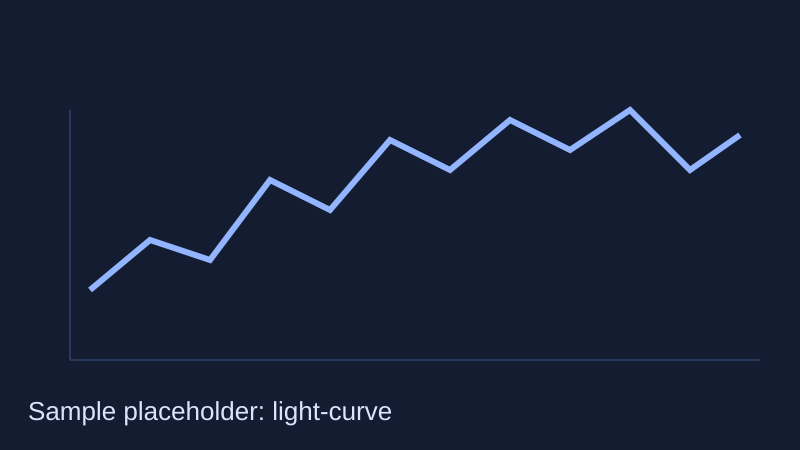

Learn article
What is a light curve?
A light curve is a plot of brightness over time. It is one of the most useful tools in modern survey astronomy.

Why light curves matter
Different phenomena brighten and fade in distinct ways. By comparing the shape, timing, and colour behaviour of a light curve, astronomers can estimate what kind of object they are seeing.
For survey pipelines, light curves help decide whether an alert should be prioritised for spectroscopy or wider follow-up.
Common features
- Rise time: how quickly brightness increases.
- Peak brightness: maximum measured flux in a band.
- Decay rate: how quickly the source fades.
- Periodicity: repeated patterns, often seen in variable stars.
What you are seeing
This article is educational scaffold content. Replace text and figures with reviewed material when moving to production.